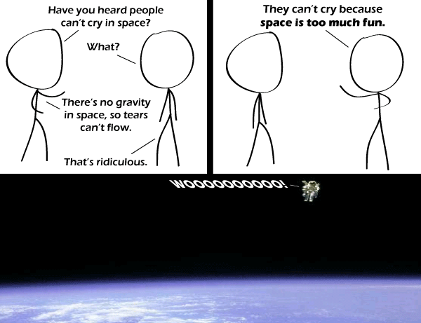

Comic JK 658
When I Feel Like It
⇤
<
?
>
⇥

⇤
<
?
>
⇥
Forum
.
RSS
.
Digg
.
Facebook
.
Reddit
.
Twitter
.
Stumbleupon
SPAAAAAAAAAAAAAAAAAAAAAAAAAAAAAAAAAAAAAAAAAAAAAAAAAAAAAAAAAAAAAAAAAAAAAAAAAAAAAAAAAAAAAAAAAAAAAAAAAAAAAAAAAAAAAAAAAAAAAAAAAAAAAAAAAAAAAAAAAAAAAAAAAACE!!! >So it was all just a lead up to this? Screams echoed through the cloud palace of Rainbow Dash's home, the filly startled wide awake in a cold sweat, terror surging through her veins. Nightmares. Again. The seventh time this month. And it was always the same one. The one with the 'cupcakes'. Flashes of memory lanced through her head. Wings being hacked off, then ripped from their sockets. Needles plunged into her beating heart, adrenaline injected into her body to keep her awake and alert at the torture went on. The smell of her own flesh cooking, the sight of her own blood and gore spilling from her surgically incised belly, the mastermind behind her terror toying with those glistening organs like they were party favors. She knew in her heart that Pinkie-Pie would never be capable of doing such a gruesome act, but it that thought didn't help to make the dreams any less vivid. The pegasus pony sobbed openly, curling up in her blanket and rocking back and forth as her body trembled with fear. She hadn't told anyone about the dreams. >Has anyone else reached the point where they cease minding the arbitrarily interjected pony-stories? In my case it seems that a love of absurdity has overtaken my usual grumpiness. >>I don't mind this little paragraph, but it's annoying when (s)he posts the thing that starts with the writter's "name", since it runs over the character limit here, and I then can't post without deleting some of it. And I'd feel bad about deleting an arbitrary part and leaving a broken sentence there, but to avoid that I'd have to READ it. So yes, it's kinda a lose-lose scenario.